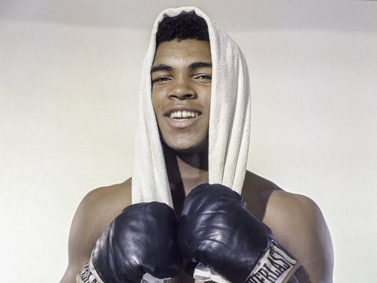

Born Cassius Clay, he became a boxing icon as well as a peace activist and a philanthropist. He was known as "The Greatest," recording 56 career wins, 37 of them by knockout, in his 61 professional bouts.

"I’ve wrestled with alligators, I’ve tussled with a whale. I done handcuffed lightning And throw thunder in jail. You know I’m bad. just last week, I murdered a rock, Injured a stone, Hospitalized a brick. I’m so mean, I make medicine sick.” - M. Ali